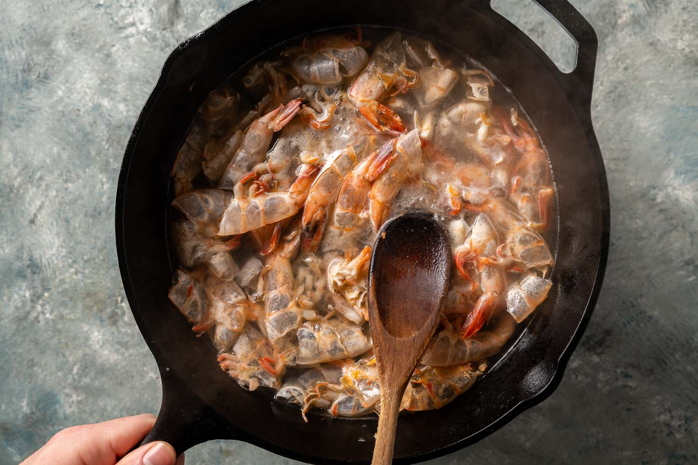

Shrimp Stock

Note: This recipe is from I Am a Filipino by Nicole Ponseca and Miguel Trinidad
Ingredients
2 tablespoons vegetable oil
1 large white onion, sliced
2 tablespoons minced garlic
Shrimp shells from 1 pound shrimp
1/2 cup annatto seeds
4 ounces crab paste with bean oil
3 tablespoons fresh lemon juice
1 tablespoon fish sauce
3 bay leaves
2 tablespoons whole black peppercorns
- In a stockpot, heat vegetable oil over medium heat. Add the onion and cook, stirring occassionally and making sure not to let it brown, for 4 minutes, or until soft. Add the garlic and shrimp shells and cook, stirring continuously, until the shells turn pink
- Add the annatto seeds, crab paste, lemon juice, fish sauce, bay leaves, peppercorns, and 12 cups water and raise the heat to high. Bring back to a boil, reduce the heat to medium, and simmer for 1 hour. Strain the stock, discarding the solids, and set it aside until ready to use or refrigerate it overnight. Reheat it gently before making the sauce.
- Leftover stock can be stored in an airtight container in the refrigerator for up to 1 week or in the freezer for up to a month.
Back to Pansit Palabok recipe
Back to Homepage